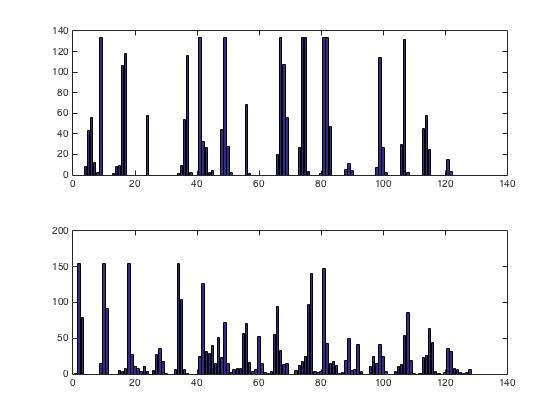
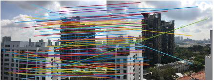
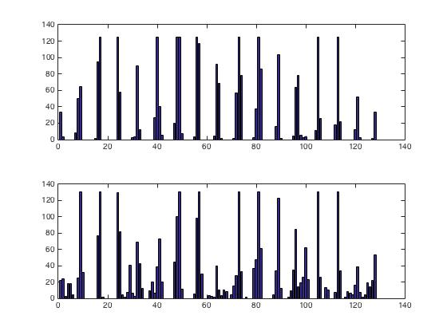
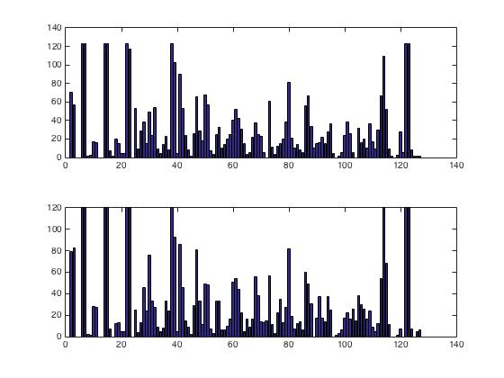

Assignment 2: SIFT
Deadline: February 18, 2022 at 5pm
Read carefully: Academic integrity must be stricly followed. Copying-and-pasting from other's code or froms any sources is not allowed. Software will be used to detect any form of source code plagiarism. You must write your code in ipython notebook (or jupiter notebook). In your jupyter notebook, you must indicate the instruction/question numbers clearly.
Part 1: SIFT Features and Descriptors
- Download the images from here: URL.
- Extract SIFT keypoints from im01.jpg using the OpenCV function. See tutorial: Website.
- Show the keypoints on the images, similar
to (not necessary to be the same as) what is shown below:

- Choose two keypoints that are located at different
background scenes (e.g. blue and red keypoints in the figure
above). Show the descriptors of the two chosen keypoints in a bar
chart as shown below. To show a histogram, see a tutorial
here: Website.

Part 2: Matching SIFT Keypoints of 2 Images
- Extract SIFT keypoints from im02.jpg and im03.jpg
- Find the matches of the keypoints from the two images. See here for a tutorial: Website 1 | Website 2
- Show 50 matches like the below figure:

- From the 50 matches, choose a wrong match and show it:
- Show the corresponding descriptors of the wrong match:

- From the 50 matches, choose a correct match and show it:
- Show the corresponding descriptors of the correct match:

- Ensure that the descriptors of the correct match are more similar to each other than those of the wrong match
Submission:
Submit your jupyter notebook via CANVAS. Again, your codes must be grouped/separated based on the parts above.